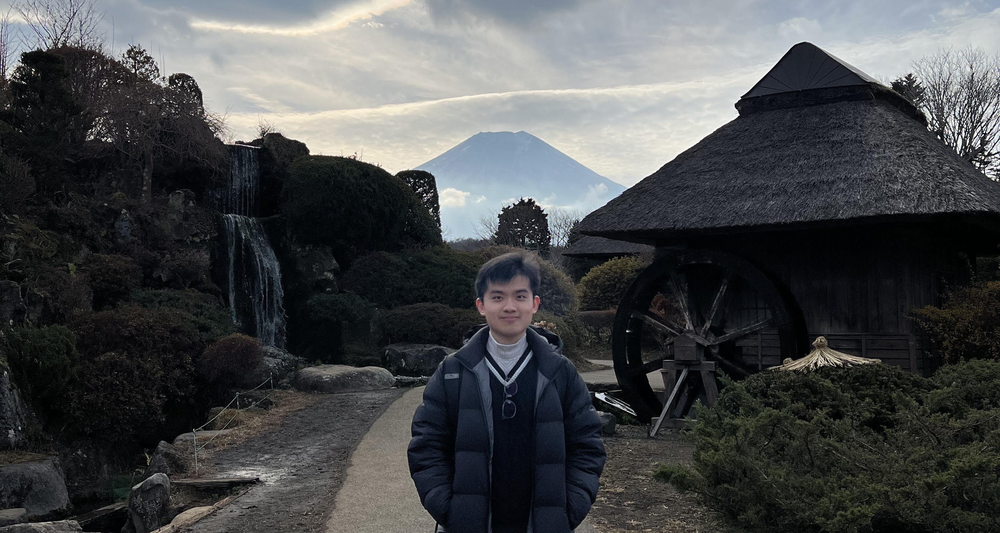

Profile

Hi! Welcome to my website. My name is Ryan Lee, and I am currently an undergraduate at National University of Singapore (NUS), studying
Data Science and Analytics. In the near future, I am hoping to undertake a Masters or PhD programme to dive deeper into my topics of interests.
I have a deep passion for Artificial Intelligence and Machine Learning, which I explore in my projects. For my 'Board Games' projects, I design the
game logic for several board games such as Chess, allowing me to implement AI into enemy bots. For my 'Data Analysis' projects, I employ several
Machine Learning algorithms onto datasets for analysis and predictions.
I enjoy reading, playing computer games, playing piano and walking. In the 'Achievements' section below, I showcase rankings I have achieved
across various competitive games.
If you would like to contact me, you can email me at leeyanleryan.21@gmail.com, or message leeyanleryan on Discord.
Experiences
Digital Production Assistant


I collaborated with 3 professors and 2 other digital production assistants on producing engaging
educational videos on Generative AI and Machine Learning. These videos are made for courses published
under NUS Blended Learning 2.0, to be used by NUS professors and staff to gain relevant knowledge on
recent AI/ML advancements.
The general workflow starts from understanding lecture slides made by the professors, converting them
into slides that are simple to understand, as well as integrating PowerPoint animations and transitions
to convey information better. Afterwards, we used Camtasia to mix the voice recordings and slides together,
ensuring that volume levels stay consistent throughout the video. Lastly, we added captions using Descript,
which are stored in .srt files so that the viewer can disable and enable captions whenever needed.
Topics contributed:
- Prompt Engineering for Large Language Models
- Introduction to Generative AI
- k-Nearest Neighbors
- Decision Tree
- Convolutional Neural Networks
- Recurrent Neural Networks
Teaching Assistant

I taught 25 NUS undergraduates CS1010E, a course on programming methodology in Python. The course
educates students from the ground up, allowing those with no programming background to acquire computational
skills at a moderate pace while having fun.
Topics taught:
- Variables
- Expressions
- Functions
- Iteration
- Recursion
- Sequences
- Higher Order Functions
- File I/O
- Multi-Dimensional Arrays
- Object-Oriented Programming
- Searching
- Sorting
- Time/Space Complexity
- Exceptions
Achievements
Your achievements content goes here.
Certifications
- Orbital - Artemis (Extreme): Awarded for achieving the highest level of achievement in CP2106, a self-directed software engineering project course at NUS. For more information on the SWE project I completed, check the Orbital NUqueSt page under the 'Projects' section in the menu.
- Teach Singapore: Awarded for the completion of GEN2050Y, an integrated service-learning course hosted by NUS for the education sector to help uplift primary and secondary school students from less-privileged family circumstances.